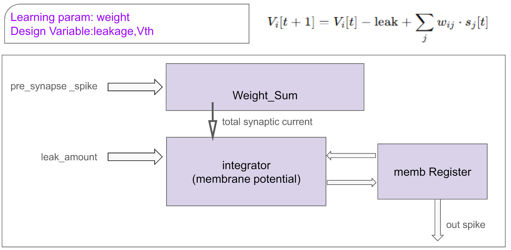

2. SNN 제어 회로와 RTL 구성
SNN은 입력을 한 번의 숫자로 계산하는 대신, 여러 time step에 걸친 spike와 뉴런 내부 상태로 처리한다. 각 LIF 뉴런은 입력 가중합을 막전위에 더하고, 시간이 지나면 일부를 누설시키며, 임계값을 넘으면 spike를 낸다. 따라서 RTL에는 곱셈·덧셈뿐 아니라 막전위 레지스터, time-step counter, 발화와 reset의 순서를 관리하는 제어가 함께 들어간다. 이 문서는 최종 실험의 99→32→4 네트워크와 공개된 네 방향 output-layer RTL을 구분해 설명한다.
네트워크와 RTL 모듈
최종 발표의 실험 네트워크는 99→32→4 구조이다. 저장소의 세 Verilog 파일은 signed 위치 오차를 네 방향으로 나누고 LIF 출력에 연결하는 경로를 다룬다. 전체 실험망과 출력 계층 RTL은 서로 다른 범위의 자료이다. 실험망은 weight 파일과 100개 time step을 포함한 계층형 계산을 설명하고, 공개 RTL은 위치 오차가 네 방향 이벤트로 나가는 인터페이스를 코드 수준에서 보여준다.
- 뉴런
- LIF: 누적 · 누설 · 임계값 · reset
- 시간
- 100 time steps
- 출력
- 방향별 spike count와 X/Y decoding
- 코드
- error_encoder · lif_neuron · controller_top
LIF 뉴런 데이터 경로
Baby Neuron datapath는 입력 spike의 가중합, 막전위 누적, 누설, 임계값 판정, reset으로 구성된다. 누설은 오른쪽 shift로 구현되며, 나눗셈기 없이 시간에 따른 막전위 감소를 나타낸다.
막전위 U는 뉴런이 이전 time step까지 받은 자극을 저장하는
상태값이다. 흥분성 weight는 U를 증가시키고, 억제성 weight는
감소시킨다. leak는 입력이 없을 때도 상태가 무한히 남지 않도록 줄이며,
threshold는 누적된 자극을 1-bit spike로 바꾸는 경계이다. 발화 후에는
막전위를 0으로 초기화하거나 임계값만큼 빼는 방식이 사용될 수 있으며,
최종 발표의 Baby Neuron은 reset-to-zero와 shift 기반 leak를 중심으로
설명한다.

| 항목 | 전체 실험망의 Baby Neuron | 공개 lif_neuron.v |
|---|---|---|
| 누설 | 막전위 오른쪽 shift 기반 | 기본값 LEAK=10을 매 clock 차감 |
| 임계값 | 실험 1: 40 · 실험 2: 300 | 기본값 U_THR=2000 |
| 입력 | pre-synaptic spike와 weight | 방향 magnitude X_in과 속도항 v_abs |
| 발화 후 상태 | 발표자료의 reset-to-zero | 임계값만큼 차감하는 subtractive reset |
| 용도 | 99→32→4 실험 네트워크 | 4방향 출력 제어 경로 설명 |
두 자료는 같은 LIF 개념을 사용하지만 동일한 모듈이나 동일한 파라미터가 아니다. 공개 코드의 기본값을 전체 네트워크의 학습·실험 조건으로 대입하지 않는 것이 구현 범위를 정확히 읽는 방법이다.
시간 단계 FSM
FSM은 초기화, 입력 처리, 누적 계산, 결과 산출, 표시 상태로 구성된다. 각 상태는 입력 생성과 막전위 갱신의 순서를 고정하며, 실험은 100개의 time step을 순차적으로 실행한다.
software에서는 반복문 하나로 100번 계산할 수 있지만, RTL에서는 어느
clock에 입력 spike가 유효하고 어느 clock에 막전위가 갱신되며 언제
출력 count를 읽을지 명시해야 한다. 특히 rate encoder의 counter와 LIF의
상태 레지스터가 같은 시간 기준을 공유하지 않으면, 의도한 spike 수와
실제 누적 횟수가 달라진다. FSM은 이 시간 경계를 고정하고 done
시점에서 방향별 count가 완성되도록 한다.
FSM은 time step별 입력과 상태 갱신의 경계를 제공한다. 병렬 뉴런 수와 cycle 수는 별도의 구현·합성 조건으로 해석한다. 100 time step은 생물학적 시간 100ms를 의미하는 값이 아니라, 입력 rate와 막전위 반응을 관찰하기 위해 정한 디지털 시뮬레이션 창이다.
99→32→4 계층 구조
입력 계층의 99개 뉴런은 보드 위치를 나타낸다. 32개 은닉 뉴런은 위치별 흥분·억제 연결을 시간에 따라 통합하며, 출력 계층은 네 방향을 제공한다. 반대 방향의 spike 수 차이는 X축과 Y축의 순 제어량으로 변환된다.
입력 뉴런은 현재 좌표에 해당하는 weight 행을 선택하는 역할을 한다.
은닉층은 여러 흥분성·억제성 연결을 합쳐 좌표별 반응을 만들고, 출력층은
이를 네 방향으로 모은다. weight는 RTL 안의 상수 몇 개로만 표현되는 것이
아니라 실험 zip의 hidden_*.hex와 output_*.hex로
분리되어 있다. 이 구조는 네트워크 연결과 뉴런 계산을 분리하므로 같은
뉴런 datapath를 유지하면서 weight 조합을 바꿀 수 있다.
| 계층 | 크기 | 받는 정보 | 내보내는 정보 |
|---|---|---|---|
| 입력 | 99 | 11×9 one-hot 위치와 rate 입력 | 위치별 spike |
| 은닉 | 32 | 흥분·억제 가중합 | 시간축 상태와 spike |
| 출력 | 4 | 은닉 계층 spike | +X · −X · +Y · −Y |
| decoder | 2축 | 방향별 spike count | X/Y 제어량과 완료 상태 |
발표자료의 99→32→4는 최종 실험 기준이다. 개발 메모에는 40 hidden이나 더 큰 네트워크 수치도 남아 있으나, 이 문서에서는 최종 발표와 결과 zip에 공통으로 확인되는 32 hidden 기준만 사용한다.
네 방향 출력 RTL
error_encoder는 signed X·Y 값을 부호에 따라 네 개의
양수 크기로 변환한다. controller_top은
lif_neuron 네 개를 배치하고 각 spike를 방향 신호에
연결한다. 세 모듈은 전체 99→32→4 실험망이 아닌 출력 계층의
인터페이스와 상태 갱신을 다루는 참고 코드이다.
error_encoder는 중앙 목표가 0이라는 조건을 이용해
ex=-x, ey=-y를 만든다. 양수 오차는 pull 채널,
음수 오차는 push 채널로 보내고 반대 채널은 0으로 둔다. 이 때문에 한
축에서는 정상적으로 한 방향만 자극된다. controller_top은
X축 두 채널에 v_abs_x, Y축 두 채널에 v_abs_y를
연결하고, 네 LIF의 1-bit spike를 각각 motor pull/push
출력에 직접 대응시킨다.
| 모듈 | 입력 | 내부 동작 | 출력 |
|---|---|---|---|
error_encoder | signed x, y | 중앙 오차의 부호와 크기를 네 채널로 분리 | X/Y pull·push magnitude |
lif_neuron | X_in, v_abs | leak, 입력 gain, 속도항, threshold, reset | 1-bit spike |
controller_top | 위치와 축별 속도항 | encoder 1개와 LIF 4개 연결 | 4방향 motor event |
공개 lif_neuron의 sequential block에서는 nonblocking
assignment를 사용한다. 따라서 현재 clock의 spike 판정은
갱신 전 막전위 U를 기준으로 하고, 같은 edge에서 다음
U가 계산된다. 파형을 읽을 때 입력 변화와 spike 사이에 clock
경계가 존재하는 이유가 여기에 있다.
저장소에는 출력 경로를 설명하는 세 모듈만 포함한다. 전체 네트워크의 가중치 파일, 테스트 데이터와 Vivado 프로젝트는 포함하지 않는다.
인터페이스와 검증 경계
뉴런 출력과 모터 구동 신호
출력 spike는 제어 의도를 나타내는 이벤트이다. 실제 모터의 PWM, pulse width, 기구부 응답은 별도 변환 계층의 범위이다.
time step과 상태 갱신 순서
입력 생성, 막전위 갱신과 출력 집계의 순서를 FSM으로 나누면 파형에서 최초 오차가 발생한 지점의 추적 기준이 된다.
좌표와 속도항
RTL은 위치와 축별 속도항이 이미 디지털 값으로 제공된다고 가정한다. 센서 취득과 좌표 추정은 모듈 바깥의 기능이다.
leak·threshold·gain
파라미터는 발화 빈도와 안정성에 직접 영향을 준다. 합성 가능한 값과 물리 제어에 적합한 값은 별도의 tuning과 폐루프 검증이 필요하다.
이 코드에서 직접 확인되는 결과는 signed 위치 오차가 네 방향으로 분리되고, 각 방향 LIF가 clock에 맞춰 상태를 갱신하며, spike가 1-bit 출력으로 전달되는 과정이다. 실제 공의 좌표를 다시 측정해 오차를 갱신하는 sensor feedback loop, 모터 driver, 보드 기울기와 공의 운동은 포함되지 않는다. 따라서 구현은 SNN 기반 제어 파이프라인의 output layer로 정의하는 것이 정확하다.